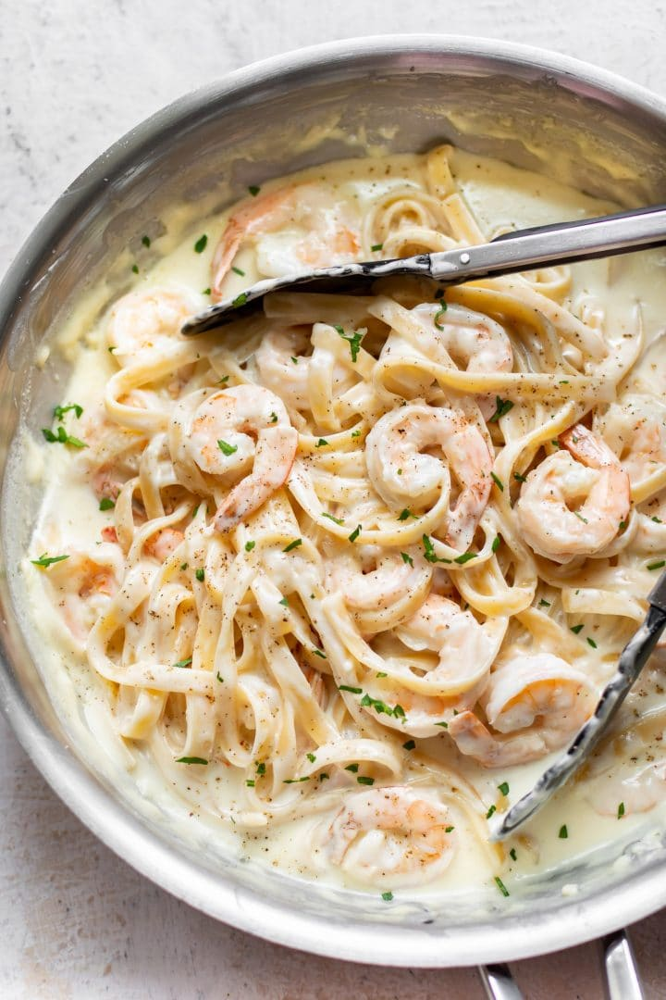

Shrimp Alfredo

Description
This shrimp alfredo pasta is what I like to call an “Amerifredo” or an American-style alfredo sauce. Authentic Roman alfredo sauce does not include any heavy cream or garlic, and it derives all of its creaminess and flavor from butter and really good Parmesan. But if you’re used to the “alfredo” served in American restaurants or bought in a jar in U.S. grocery stores, that’s what this recipe delivers.
Ingredients
- teaspoons extra virgin olive oil
- 1 pound ground beef chuck
- 1/2 medium onion, diced (about 3/4 cup)
- 1/2 large bell pepper (green, red, or yellow), diced (about 3/4 cup)
- 2 cloves garlic, minced
- 1 (28-ounce)can good-quality tomato sauce
- 3 ounces tomato paste (half a 6-ounce can)
- 1 (14 ounce) can crushed tomatoes
- 2 tablespoons chopped fresh oregano, or 2 teaspoons dried oregano
- 1/4 cup chopped fresh parsley (preferably flat leaf), packed
- 1 tablespoon Italian seasoning
- 1 pinch garlic powder and/or garlic salt
- 1 tablespoon red or white wine vinegar
- 1 tablespoon to 1/4 cup sugar (to taste, optional)
- Salt
Steps
- Put pasta water on to boil
- Put a large pot of salted water (1 Tbsp salt for every 2 quarts of water) on the stovetop on high heat. It can take a while for a large pot of water to come to a boil (this will be your pasta water), so prepare the sauce in the next steps while the water is heating.
- Brown the ground beef
- In a large skillet heat 2 teaspoons of olive oil on medium high heat. Add the ground beef and cook until it is lightly browned on all sides.
- Remove the beef with a slotted spoon to a bowl. Drain off all but a tablespoon of fat.